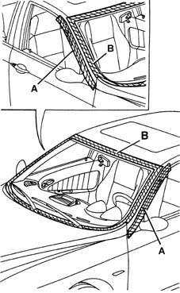

7035AB Location of windscreen wind noise
- Path
- Test > 70 FITTINGS > 7035 BODYSHELL WINDOWS > 7035A windscreen > 7035AB Location of windscreen wind noise
- Kind
- test / check procedure
- Applies to
- engines: 1.6 TS , 1.8 TS, 2.5 V6, 1.9 JTD 8v , 2.4 JTD 10v; all production periods
- Interactive page
- https://sloeber94.github.io/elrnDB-a156/en/#/3239193
Applies to: engines: 1.6 TS , 1.8 TS, 2.5 V6, 1.9 JTD 8v , 2.4 JTD 10v; all production periods
Tape the various areas shown in the diagram using masking tape.

Carry out a road test letting the vehicle gradually reach the speed at which the noise appears: if the noise persists, check that the windscreen has been correctly taped and also check whether the source of the noise may be in the area of the sun roof.
Remove the masking tape from zone A and repeat the road test: if the noise persists, locate the noise in the area of the front doors (see 7005 PASSENGER COMPARTMENT FRONT SIDE DOORS ).
Remove the masking tape from zone B (glass only). Check the condition of the window trim moulding (no wrinkles or pinched parts). If necessary, replace the trim, removing the glass (see Op. 7035A14 (Bonded type) windscreen GLASS - R.R. - Includes. cleaning edges of glass and housing in bodyshell ).